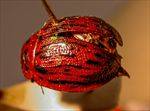
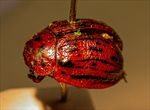
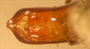
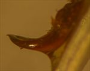
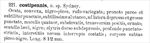

Click on images to enlarge
.jpg){kind=link}

Fig. 1. Paropsis costipennis type specimen, dorsal view
.jpg){kind=link}

Fig. 2. Paropsis costipennis type specimen, lateral view
.jpg){kind=link}

Fig. 3. Paropsis costipennis type specimen, aedeagus, dorsal view
.jpg){kind=link}

Fig. 4. Paropsis costipennis type specimen, aedeagus, lateral view
.jpg){kind=link}
Fig. 5. Paropsis costipennis type specimen, labels
{kind=link}

Fig. 6. Paropsis costipennis, description
Name
Paropsis costipennis Chapuis, 1877
Corresponds to
This is the same species as Ta18.
Diagnosis and Notes
Although Blackburn (1896) did not see the type of costipennis, he included it in the key on the basis of specimens he compared with the description. He includes it in his 'subgroup iii' (i.e., those species without "strongly marked characters", whose greatest height is not or scarcely in front of the middle of the elytral margin and whose elytra are not depressed under the humeral callus). Within that group, he characterises it as:
A. Elytra with a distinct postbasal impression on the disc);
B. Elytral margin (viewed from the side) strongly sinuous;
C. elytra furnished with strongly defined interupted costae.
By comparison with the type specimen (size, form of verrucae, aedeagus and HCE/BL), it is very likely that Ta18 is the same species as T. costipennis. Blackburns item (2) in the key is not at all generally present in this species, with only a few specimens having a sinuous lateral elytral margin.
Type specimen
Location: RBINS
Label data: /"Sidney"/ “Coll. Chapuis”/ "TYPE"/ "Type"/ “P. costipennis Sydney Chp.”/ “Trachymela costipennis (Chap.) ref. M. Daccordi 2003”/.
Male; aedeagus had been dissected out and glued to a card; length 8.5 mm (from original description); HCE/BL = 19.25% (my estimate from photo measurements).
Original description
Translation of original description (Figure 6) by ChatGPT, 03/2026:
Oval, convex, blackish-pitchy, reddish-variegated; pronotum sparsely finely punctured, very finely reticulate, with a coarse lateral depression; ornamented with four elevated spots arranged transversely; scutellum smooth, black; elytra somewhat depressed on the dorsum, deeply punctate-striate, the interstices forming nine interrupted ribs; underside blackish-pitchy, legs reddish.
Length: 8.5 mm; Locality: Sydney.References
Blackburn, T. 1896, "Revision of the genus Paropsis. Part I", Proceedings of the Linnean Society of New South Wales, vol. 21, no. 4, 637-693 (page 678).
Chapuis, F. 1877, "Synopsis des espèces du genre Paropsis", Annales de la Société Entomologique de Belgique (Comptes-rendus), vol. 20, 67-101 (page 96).Copyright © 2026. All rights reserved.